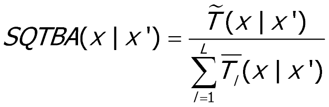

目录：
1. 软件介绍
2. 软件结构
3. 必要数据
4. 轨迹追踪受体模型算法
4.1 Conditional Probability Function (CPF)
4.2 Concentration Field Analysis (CFA)
4.3 Concentration Weighted Trajectory (CWT)
4.4 Residence Time Weighted Concentration (RTWC)
4.5 Potential Source Contribution Function (PSCF) and multiple-site PSCF
4.6 Simplified Quantitative Transport Bias Analysis (SQTBA)
5. 时间序列分析算法
5.1 Kendall's tau相关系数
5.2 Theil-Sen斜率估计
6. GIS算法
6.1 栅格平滑
6.2 栅格峰值
6.3 栅格加权
7. 致谢
用户手册和实例.pdf
1. 软件介绍：
TraPSA (Trajectory-based Potential Source Apportionment) software is a graphical air pollution source analysis tool based on air pollutant measurements and a state-of-art air mass back trajectories model HYSPLIT-4. TraPSA aims to provide researchers and students an integrated and user-friendly platform for air pollutant database development and managment, pollutant pattern and trend analysis, and potential source identification, especially on applying, comparing and exploring current popular trajectory ensemble receptor models.
Main Interface of TraPSA Database of pollutant monitoring site could be established in TraPSA. Smart back trajectory method in TraPSA could help users easy to set up, calculate and import trajectory.TraPSA includes current popular algorithms of trajectory ensemble receptor models, Conditional Probability Function (CPF), Concentration Field Analysis (CFA), Concentration Weighted Trajectory (CWT), Residence Time Weighted Concentration (RTWC), Potential Source Contribution Function (PSCF), and Simplified Quantitative Transport Bias Analysis (SQTBA). TraPSA provides users sufficient GIS editing function for air pollutant source apportionment, also, GIS data files (ESRI shape file and Geo TIFF file) could be imported or exported by TraPSA, therefore further research or editing by professional GIS software is possible.
TraPSA is developed as an extension package of HYSPLIT_4 software, it can be linked to HYSPLIT_4 installation on the computer. However, TraPSA can be used without installation of the full HYSPLIT_4 software suite because TraPSA software includes an unregistered version of the HYSPLIT_4 trajectory model executable. It is strongly recommended that users should correctly register and install HYSPLIT software suite in order to generate the trajectory with the latest HYSPLT version.
TraPSA was programed in MATLAB 2015b. It is only executable on Windows OS platforms and a 1920 X 1080 screen resolution is recommended. MATLAB runtime is required to run TraPSA so that the full version of MATLAB is not necessary. MATLAB runtime will automatically be downloaded if it hasn’t already been installed on the computer.
返回顶部
2. 软件结构：
The structure of TraPSA is shown in following figure, the grey blocks show the data required by TraPSA. Air pollutant monitoring site database should be firstly established with site information and pollutant measurement data. Trajectory endpoints will be generated based on pollutant measurement date using meteorological data and HYSPLIT model. As an optional data-in, trajectory endpoints could be imported into database if the files are previously generated by HYSPLIT_4.
Structure of TraPSA Then the pollutant data and corresponding trajectory endpoints could be extracted from database and used for analysis. TraPSA contains both pollutant pattern analysis, trend analysis, and trajectory ensemble receptor models (including CPF, CFA, CWT, RTWC, PSCF, and SQTBA) for potential source likely location identification. ESRI shapefile of related region are required to correctly display the results of trajectory ensemble receptor models. Any figures generated by TPBS can be exported including their numerical data. Trajectory endpoints and map raster can be exported as GIS data formats (ESRI shape file and Geo TIFF file) if further analysis and edit is necessary in other GIS software.
返回顶部
3. 必要数据：
Meteorological data is required by TraPSA for generating HYSPLIT trajectory. Various meteorological data formats are avaliable as long as they are recognizable by HYSPLIT_4, also HYSPLIT_4 suite contains numerous converters that users can convert data into HYSPLIT format. Typically, the Eta Data Assimilation System (EDAS) with the 40 km resolution data and North American Regional Reanalysis (NARR) data are used for North American locations. The Global Data Assimilation System (GDAS) and the NCEP/NCAR Reanalysis Archive have been used for sites in Europe and Asia. In addition, NOAA ARL maintains an archive of meteorological datasets called "Ready" in HYSPLIT format that can be used to drive the HYSPLIT trajectory model (as well as other HYSPLIT executables).
ESRI shapefiles is required to display map in TraPSA. Two GIS data formats, ESRI shapefile (‘.shp’, ‘.dbf’ and ‘.shx’) and GeoTIFF file (‘.tif’) are available for TraPSA. Shapefiles of related regions should be download before analyzing. Note that it will take longer time to display more specified shapefiles.
Pollutants measurement data is required for receptor models. The import file format could be ‘.cvs’, ‘xlsx’ or ‘.xls’. Data should contain species names, units, collection date and concentration, the in-file format should be organized as following figure. Note that collection date format could be alterable as long as identifiable by TraPSA, but must including year, month, day and hour information. TraPSA will handle the date format, missing data and replicate data automatically.
Input Pollutant Measurement Data Format
4. 轨迹追踪受体模型算法：
Trajectory ensemble receptor model is one of the receptor models for air pollution source likely location apportionment combining pollutant concentration measurement data and air parcel back trajectory calculations. TraPSA includes current popular algorithms of trajectory ensemble receptor models, Conditional Probability Function (CPF), Concentration Field Analysis (CFA), Concentration Weighted Trajectory (CWT), Potential Source Contribution Function (PSCF), Residence Time Weighted Concentration (RTWC), and Simplified Quantitative Transport Bias Analysis (SQTBA).
4.1 Conditional Probability Function (CPF)
CPF determines the probability of a wind direction to be associated with specific pollutant levels and can be useful for determining local source directions. A criterion value C (which is adjustable in TraPSA) representing the measured high concentration events is arbitrarily set (usually 75%~90% of the highest concentration); then the CPF value for different wind directions is calculated as:
Note that the wind direction has a large uncertainty for low speeds (typically 5 km/h, the parameter can be manually set), therefore these data should be discarded. Also note that the wind speed and direction, which is generated by HYSPLIT4, will probably change with the trajectory starting height used.
4.2 Concentration Field Analysis (CFA)
The CFA model determines air pollutant source by combining concentration measurements with back trajectories. For this method, the whole geographic region is divided into an array of grid cells defined by the cell indices i and j. Back-trajectories (presenting as l) will be generated at concentration measurement time at receptor site as the back-trajectory starting times. Trajectory endpoints in grid cells (presenting as τ) will be counted after back-trajectory calculation. If a trajectory endpoint lies in the grid cell, the trajectory is assumed to collect and transport the material emitted in this cell along the trajectory to the receptor site. The CFA values then can be calculated as follow, and a grid cell with lager CFA value implies the higher contribution of pollutant to the receptor site:
4.3 Concentration Weighted Trajectory (CWT)
The concentration field values of the grids that hit by the trajectory with a concentration close to 0 at receptor site will significantly reduce due to the logarithmic calculations in CFA. The CWT model is a modificated method of CFA using linear calculation, which is robust to the trace pollutant measurement. The CWT values can be calculated as follows:
4.4 Residence Time Weighted Concentration (RTWC)In order to determinate a large source from a moderate source, the RTWC model is used for calculate a grid concentration field. The rational of the redistribution in RTWC approach is no major pollutant sources are located along a ‘‘clean’’ trajectory (with verylow concentration at the receptor site). The ‘‘polluted’’ trajectory (with high concentration at the receptor site) must have taken up the emission along its path where no ‘‘clean’’ trajectories pass. The initial field can be calculated by CWT or CFA model. Redistributed concentrations for every trajectory are calculated as:
Then concentration field is iterated until the average difference between the concentration fields of two successive iterations is below a criterion value (typically 0.5%):
4.5 Potential Source Contribution Function (PSCF) and multiple-site PSCF
The PSCF model has similar concept to CFA, however, a contribution function is applied instead of receptor concentration measurements. The contribution function is determined by a criterion value C (the parameter is adjustable in TraPSA), which is arbitrarily set (usually 80%~90% of the highest concentration). The contribution value of the endpoint on a back trajectory with receptor concentration larger than C is 1, otherwise the contribution value is 0:
Then PSCF values are calculated as follow:

The PSCF model can't be directly applied into multi-site analysis as a contribution function is applied. The multi-site PSCF analysis is defined as:
4.6 Simplified Quantitative Transport Bias Analysis (SQTBA)
The uncertainties increase with the increasing trajectory length. The uncertainties of trajectories were considered in SQTBA model, a simplification version of QTBA. SQTBA assumes a normal distribution caused by atmospheric dispersion is approximated about the trajectory centerline with a standard deviation that increases linearly with time in the upwind direction. Thus the transition probability density function can be expressed as:
The potential mass transfer potential field for a given trajectory l, arriving at time t, is integrated over back trajectory time τ:
The concentration-weighted mass transfer potential field is calculated as:
Then final SQTBA field is obtained as follow:

5. 时间序列分析算法：
Detecting and assessing temporal trends of long term air pollutant concentration is important for environmental studies, monitoring programs, and evaluating air pollution control policies. Trend evaluations are frequently used to determine whether it is reasonable to assume concentrations are temporally stationary (for example, to perform statistical evaluations that require stationary means) and to detect or model decreasing trends to support natural attenuation studies.
TraPSA includes Kendall's tau and Sen's slope for trend analysis.
5.1 Kendall's tau相关系数
Kendall’s tau is a non-parametric measure of correlation between two data series. It provides whether the trend is positive or negative and the strength of correlation between two data series. A negative correlation indicates that when X is increasing then Y is decreasing. It presents the difference between the probability that the observed data are in the same order versus the probability that the observed data are no in the same order. A higher absolute value of Kendall’s tau implies a stronger positive or negative correlation.
返回顶部
5.2 Theil-Sen斜率估计
Sen’s slope is a nonparametric linear regression models, which is robust to outliers and non-normality in residuals. This method has been widely used in climate and hydrological trend analysis. Sen’s slope is defined as the median of the slopes (yi-yj)/(xi-xj) determined by all pairs of sample points in a set of two-dimensional points (xi, yi).
The Theil–Sen estimator of a set of sample points with outliers (black line) compared to the non-robust simple linear regression line for the same set (blue). The dashed green line represents the ground truth from which the samples were generated.

6. GIS算法：
TraPSA provides a basic grid smoothing and focalization function, it is calculated as following method:
6.2 栅格峰值
TraPSA provides a basic grid peak identification function. One grid will be recognized as a peak grid if its value is larger than any other surrounding grids. Then the identified peak grids will be sorted by grid value from high to low, and the number of highest peak grids is adjustable in TraPSA.
返回顶部
6.3 栅格加权
When cells are crossed by small number of trajectories, false source areas maybe found if some of the trajectories also pass real source areas, this is called “tailing effect”. A weighting function could be used to avoid “tailing effect”. It is defined as follows:
7. 致谢：
Dr. Thomas M. Holsen, the director of the center for Air Resource Engineering & Science (CARES), Clarkson University, the TraPSA project advisor, adviced on the software structure.
Dr. Philip K. Hopke (retired), the diector of Institute for a Sustainable Environment (ISE), director of the center for Air Resource Engineering & Science (CARES), Clarkson University, made valuable suggestions on trajectory ensemble receptor models.
Dr. Mark Cohen, NOAA Air Resources Lab, helped on the linkage between TraPSA and HYSPLIT software.
Hao Zhou, Ph.D candidate of Institute for a Sustainable Environment (ISE), Clarkson University, did most software testing work.